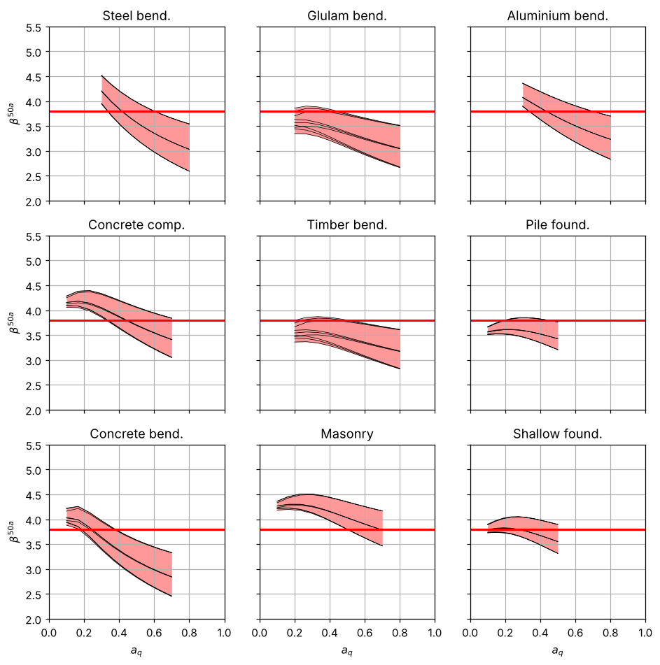
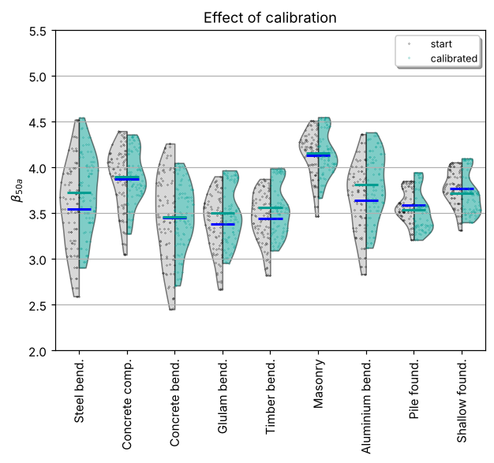
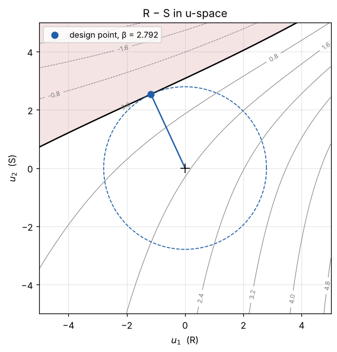

12. Scripting with codecal#
Everything the interface does is a few function calls. This page is the tour of the package: build a model, evaluate a design situation, run the sweep, calibrate, verify, plot, and feed a modified model back in. The API reference lists every function.
12.1. The model#
ahg_spec() is the AHG model as a plain dictionary; build_model
turns it into a CalibrationModel (simulating the characteristic
loads on the way). ahg_model() does both. One million draws are
enough for a script; the tests use ten million.
spec = cc.ahg_spec(n_mcs=1_000_000)
model = cc.build_model(spec)
print(model.summary()[:600], '...')
AHG 2021 — Reliability Background of the Eurocodes
reference period 50 a, target β 3.8
9 failure modes × 3 loads × 3 a_G × 10 a_Q = 810 design situations
Failure modes:
Steel bending: Θ_R mean 1.15 CoV 0.05, R CoV 0.050 (x_k 0.830), γ_M 1.0, a_Q (0.3, 0.8), a_G (0.6, 1.0), w 0.17
Concrete compression: Θ_R mean 0.97 CoV 0.14, R CoV 0.100 (x_k 0.844), γ_M 1.5, a_Q (0.1, 0.7), a_G (0.6, 1.0), w 0.12
Concrete bending: Θ_R mean 1.03 CoV 0.07, R CoV 0.045 (x_k 0.928), γ_M 1.15, a_Q (0.1, 0.7), a_G (0.6, 1.0), w 0.4
Glulam bending: Θ_R mean 1.00 CoV 0.10, R CoV 0.150 (x_k 0.774), γ_M 1.25, ...
The model is a list of failure modes and a list of variable loads; each
carries its random variables. A RandomVariable knows its
distribution, its characteristic value and how to map a standard-normal
u to x.
steel = model.failure_modes[0]
print(steel.name, '—', steel.R.name, type(steel.R.dist).__name__, 'CoV', round(steel.R.cov, 3), 'x_k', steel.R.char)
wind = model.loads[0]
print(wind.name, '— Q at the analysis period: mean', round(wind.Q.mean, 3), 'CoV', wind.Q.cov, 'q_k', round(wind.Q.char, 3))
print('x(u) for u = -2, 0, 2:', np.round(steel.R.dist.x_of_u(np.array([-2.0, 0.0, 2.0])), 3))
Steel bending — Steel yield strength Lognormal CoV 0.05 x_k 0.83
wind — Q at the analysis period: mean 1.0 CoV 0.14 q_k 1.084
x(u) for u = -2, 0, 2: [0.904 0.999 1.104]
12.2. One design situation#
A DesignSituation is a failure mode, a load and the proportions
\((a_G, a_Q)\). design_parameter applies the design equation,
limit_state builds \(g\), and reliability does both and runs FORM.
pf = cc.PartialFactors(gamma_G=1.35, gamma_GP=1.35, gamma_Q={'wind': 1.5, 'snow': 1.5, 'imposed': 1.5}, xi=0.85)
sit = cc.DesignSituation(steel, wind, a_G=0.8, a_Q=0.5, weight=1.0, model=model)
for eq in ('8.12', '8.13', '8.14'):
beta, res, z = sit.reliability(pf, equation=eq)
print(f'eq. {eq}: z = {z:.4f}, β = {beta:.3f}, converged in {res.iterations} iterations')
print('sensitivities α²:', res.sensitivities(sit.variable_names))
eq. 8.12: z = 1.7924, β = 3.573, converged in 11 iterations
eq. 8.13: z = 1.6704, β = 3.292, converged in 11 iterations
eq. 8.14: z = 1.6704, β = 3.292, converged in 11 iterations
sensitivities α²: {'Θ_R': 0.0408, 'R': 0.0408, 'Θ_E': 0.1625, 'G': 0.0007, 'P': 0.0007, 'Θ_Q': 0.4972, 'Q': 0.2574}
12.3. The sweep#
evaluate runs FORM (or SORM) for every design situation and returns
one row per situation. weighted_mean_beta and beta_table summarise
it; the plot functions draw it.
df = cc.evaluate(model, pf, equation='8.12')
print(len(df), 'situations; weighted-mean β =', round(cc.weighted_mean_beta(df), 3),
'; objective M =', round(cc.objective(df, 3.8), 4))
df.head()
810 situations; weighted-mean β = 3.742 ; objective M = 0.1888
| mode | load | a_G | a_Q | weight | z | beta | form_iterations | converged | alpha_Θ_R | alpha_R | alpha_Θ_E | alpha_G | alpha_P | alpha_Θ_Q | alpha_Q | |
|---|---|---|---|---|---|---|---|---|---|---|---|---|---|---|---|---|
| 0 | Steel bending | wind | 0.6 | 0.300000 | 0.002269 | 1.726060 | 4.194377 | 14 | True | -0.241254 | -0.241254 | 0.481608 | 0.034480 | 0.091946 | 0.636583 | 0.486586 |
| 1 | Steel bending | wind | 0.6 | 0.355556 | 0.002269 | 1.744496 | 3.986871 | 13 | True | -0.224728 | -0.224728 | 0.448618 | 0.028259 | 0.075358 | 0.661800 | 0.503269 |
| 2 | Steel bending | wind | 0.6 | 0.411111 | 0.002269 | 1.762932 | 3.808279 | 12 | True | -0.211986 | -0.211986 | 0.423182 | 0.023474 | 0.062596 | 0.680436 | 0.513399 |
| 3 | Steel bending | wind | 0.6 | 0.466667 | 0.002269 | 1.781368 | 3.653423 | 12 | True | -0.201657 | -0.201657 | 0.402563 | 0.019596 | 0.052256 | 0.695126 | 0.519901 |
| 4 | Steel bending | wind | 0.6 | 0.522222 | 0.002269 | 1.799804 | 3.517940 | 11 | True | -0.192991 | -0.192991 | 0.385263 | 0.016343 | 0.043582 | 0.707192 | 0.524208 |
cc.beta_table(df).round(2)
| load | wind | snow | imposed |
|---|---|---|---|
| mode | |||
| Steel bending | 3.52 | 3.17 | 3.94 |
| Concrete compression | 3.84 | 3.62 | 4.15 |
| Concrete bending | 3.42 | 3.15 | 3.78 |
| Glulam bending | 3.34 | 3.08 | 3.71 |
| Timber bending | 3.41 | 3.17 | 3.74 |
| Masonry | 4.10 | 3.92 | 4.37 |
| Aluminium bending | 3.61 | 3.31 | 4.00 |
| Pile foundation | 3.55 | 3.42 | 3.79 |
| Shallow foundation | 3.73 | 3.59 | 3.98 |
plots.plot_beta_vs_aQ(df, 3.8)

12.4. Calibration#
calibrate minimises \(M(\gamma)\) over the named parameters. Names:
gamma_G, gamma_GP, gamma_Q (common), gamma_Q:<load> (per load),
xi. Setting gamma_G without gamma_GP sets both permanent-load
factors (the convention of the study).
res = cc.calibrate(model, free=('gamma_G', 'gamma_Q'), start=pf, equation='8.12', beta_target=3.8, verbose=False)
print(res)
calibrated gamma_G, gamma_Q (β_t = 3.8)
gamma_G 1.215
gamma_Q 1.750
weighted-mean β 3.742 → 3.809
objective 1.365e-01 (16 evaluations)
plots.plot_beta_distribution(res.sweep_after, 'mode', 3.8, ref_df=res.sweep_before, labels=('calibrated', 'start'))

CalibrationResult carries the factors, the sweeps before and after,
the optimiser history and the scipy result:
print(res.factors)
print('evaluations:', len(res.history), '| SLSQP:', res.optimizer.message)
print('γ_Q,wind of the result:', res.factors.get('gamma_Q:wind'))
PartialFactors(gamma_G=1.2154096497373543, gamma_GP=1.2154096497373543, gamma_Q={'wind': 1.75032560483013, 'snow': 1.75032560483013, 'imposed': 1.75032560483013}, xi=0.85)
evaluations: 16 | SLSQP: Optimization terminated successfully
γ_Q,wind of the result: 1.75032560483013
12.5. Verification of one situation#
form, sorm, importance_sampling and monte_carlo work on any
LimitState — the ones of the model, or your own.
z = sit.design_parameter(res.factors, '8.12')
ls = sit.limit_state(z)
r = cc.form(ls)
b_sorm, kappa = cc.sorm(ls, r)
isr = cc.importance_sampling(ls, r, n=50_000, seed=1)
print(f'FORM {r.beta:.4f} SORM {b_sorm:.4f} IS {isr.beta:.4f} ± {isr.se_beta:.4f}')
FORM 3.7472 SORM 3.7072 IS 3.7075 ± 0.0024
A limit state of your own: two variables, \(g = R - S\).
R = cc.rv('R', 'lognormal', mean=2.5, cov=0.15, fractile=0.05)
S = cc.rv('S', 'gumbel', mean=1.0, cov=0.30, fractile=0.98)
ls2 = cc.LimitState(lambda x: x[0] - x[1], [R, S], name='R − S')
r2 = cc.form(ls2)
print(f'β = {r2.beta:.3f}, α = {np.round(r2.alpha, 3)}, design point x* = {np.round(r2.x_star, 3)}')
plots.plot_limit_state_2d(ls2, r2, title='R − S in u-space')
β = 2.792, α = [-0.42 0.908], design point x* = [2.076 2.076]

12.6. A modified model#
Edit the dictionary, validate, build, and compare — the same thing the lab mode does. Here: snow with a more uncertain model (CoV 0.26 → 0.35).
spec2 = cc.ahg_spec(n_mcs=1_000_000)
spec2['loads'][1]['theta_Q']['cov'] = 0.35
print('problems:', cc.validate_spec(spec2))
print('changes:', cc.diff_specs(spec, spec2))
model2 = cc.build_model(spec2)
df2 = cc.evaluate(model2, pf, equation='8.12')
print('weighted-mean β:', round(cc.weighted_mean_beta(df), 3), '→', round(cc.weighted_mean_beta(df2), 3))
cc.beta_table(df2).round(2)['snow'].to_frame('snow, CoV(Θ_Q) = 0.35').join(cc.beta_table(df).round(2)['snow'].to_frame('snow, CoV(Θ_Q) = 0.26'))
problems: []
changes: [('loads[snow].theta_Q.cov', 0.26, 0.35)]
weighted-mean β: 3.742 → 3.727
| snow, CoV(Θ_Q) = 0.35 | snow, CoV(Θ_Q) = 0.26 | |
|---|---|---|
| mode | ||
| Steel bending | 2.93 | 3.17 |
| Concrete compression | 3.49 | 3.62 |
| Concrete bending | 3.00 | 3.15 |
| Glulam bending | 2.98 | 3.08 |
| Timber bending | 3.09 | 3.17 |
| Masonry | 3.82 | 3.92 |
| Aluminium bending | 3.13 | 3.31 |
| Pile foundation | 3.38 | 3.42 |
| Shallow foundation | 3.53 | 3.59 |
Save it for the lab mode, or for the command line
(python run_calibration.py --model snow_035.json):
with open('snow_035.json', 'w', encoding='utf-8') as f:
f.write(cc.to_json(spec2))
print(open('snow_035.json').read()[:300], '...')
os.remove('snow_035.json')
{
"name": "AHG 2021 — Reliability Background of the Eurocodes",
"T_ref": 50,
"n_aQ": 10,
"n_aG": 3,
"beta_target": 3.8,
"seed": 12345,
"n_mcs": 1000000,
"theta_E": {
"name": "Load-effect model uncertainty",
"family": "lognormal",
"mean": 1.0,
"cov": 0.1,
"char": 1.0,
"note": "by ...